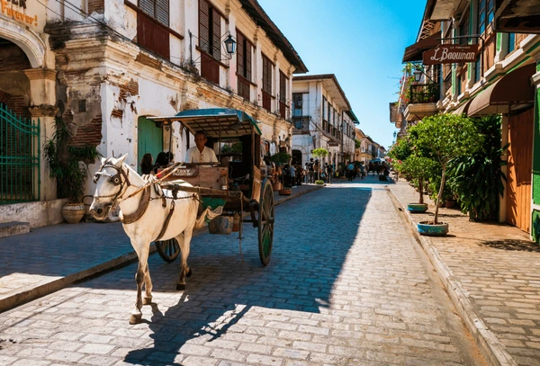
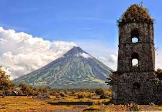
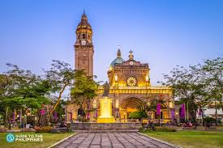
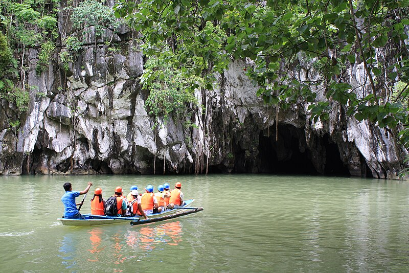
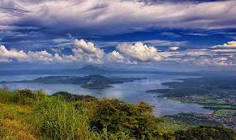
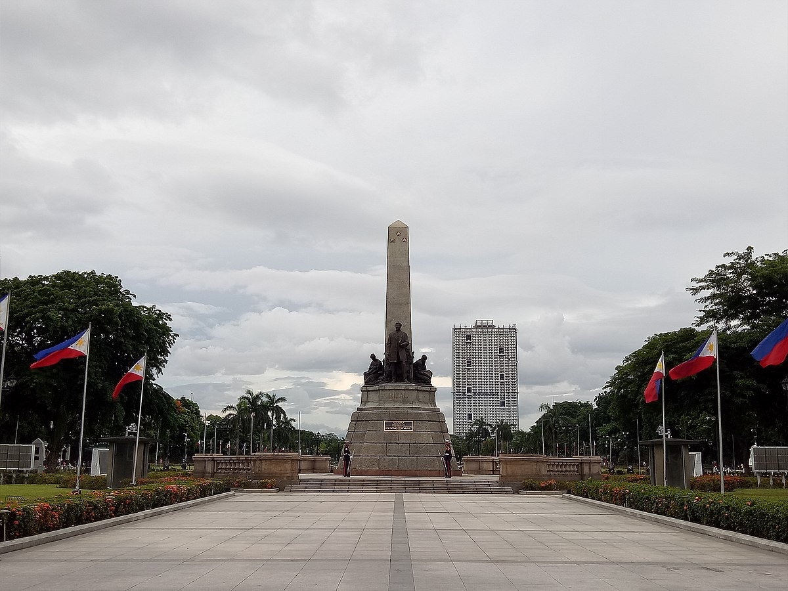
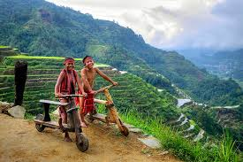
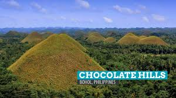
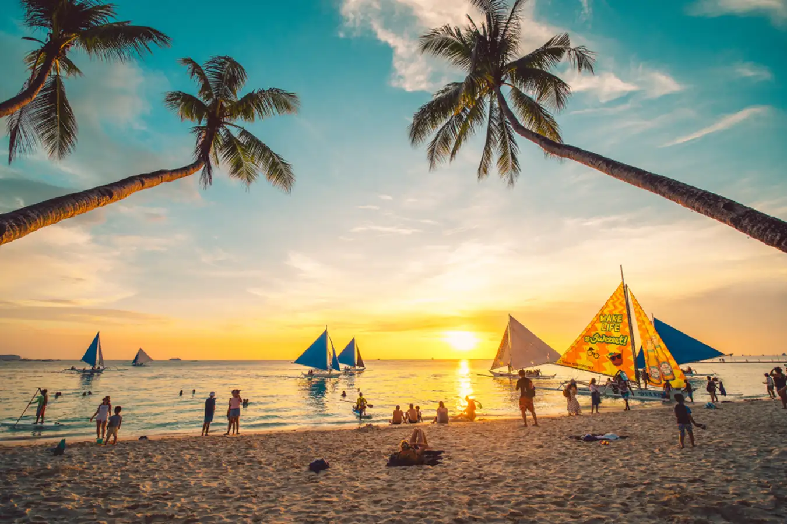

Calle Crisologo, Vigan

Travel back in time as you stroll along the streets of Calle Crisologo in Vigan as part of your Ilocos itinerary. This 16th-century town, a UNESCO World Heritage Site and a popular tourist spot in the Philippines, quietly boasts old-world charm and Spanish colonial architecture and is the top attraction in Vigan, Ilocos tours and one of the top historical landmarks in the Philippines. The town famous for its Calle Crisologo tour has successfully managed to preserve the historic district where you can still find calesas (horse-drawn carriages).
Tubbataha Reef, Palawan

Tubbataha Reef is regarded as one of the top diving spots in the Philippines, and, perhaps, the world. Located at the heart of the Sulu Sea, it is considered a center of marine biodiversity and a haven not just for divers but marine conservationists as well. The only way to get to this marine sanctuary is through a liveaboard vessel from Puerto Princesa, Palawan.The access may be challenging, but it is probably what is keeping the Tubbataha Reefs Natural Park teeming with some of the most unique underwater life in the world. It is listed as a UNESCO World Heritage Site and was nominated as part of the “New Seven Wonders of the Natural World.”
Mayon Volcano, Albay, Bicol
As soon as your flight lands at the airport in Bicol International Airport of Albay province, the worlds most perfect volcanic cone and the most active volcano in the Philippines greets you with its majesty. Mayon Volcano is one of the most beautiful places to visit in the Philippines and is a top attraction in any Bicol tour. Its sheer beauty (the name Mayon comes from the Bicolano word - magayon which means beautiful) hides a violent core, with past eruptions that flattened several towns.
Intramuros and Fort Santiago, Manila

Take a stroll through history lane within the walled city of Intramuros in Manila, one of the top landmarks in the Philippines. This 64-hectare Spanish fortress was erected by Miguel Lopez de Legazpi and was destroyed by the end of World War II. However, the ruins remain today and are some of the top Instagrammable places in Manila. The area can be explored via Intramuros tours or a Manila bike tour. The area has become home to several universities and establishments. Here, you can find centuries-old churches, which are architectural landmarks in the Philippines, and historical places in Manila like the grand Manila Cathedral and San Agustin Church, the oldest church in the Philippines, making the area a great place for a Philippines staycation.
Puerto Princesa Underground River, Palawan

The gateway to the Philippines Last Frontier, Palawan, is its capital Puerto Princesa. It is here that you can find the world longest navigable underground river and a UNESCO World Heritage Site, the Puerto Princesa Underground River or the Puerto Princesa Subterranean River National Park. To explore this world-famous attraction and one of the best Philippine caves, book a Puerto Princesa underground river tour.Paddleboats of the Puerto Princesa underground river tours cruise through scenic limestone cliffs as they make their way through the accessible area (1.5 km) of the underground river cave.
Taal Volcano and Lake, Tagaytay, and Batangas

Locals and foreign visitors from Manila often take a quick escape from the megacity and make their way south to Tagaytay, a relaxing town famous for its cool weather, magnificent views, and many tourist spots. It's popular for being one of the best kid-friendly places near Manila. The best Tagaytay hotels have a view that faces Taal Volcano, one of the worlds smallest active volcanoes. The volcano sits on an island within a lake within an island.Since hikes to the crater are no longer allowed, head to Tagaytay restaurants, Tagaytay cafes, or Tagaytay hotels with a view of Taal. While in Tagaytay and Batangas, heat up your trip with a delectable bowl of Bulalo, a clear broth with beef shanks, bone marrow, and corn.
Kayangan Lake, Coron, Palawan

Undoubtedly one of the most photographed and iconic destinations in the Philippines is Kayangan Lake in Coron, Palawan. Going on a Kayangan Lake Coron tour will allow you to see its lagoon that is a dreamy mix of blues and greens glistening on a bright, sunny day. It should definitely be on your Coron Palawan itinerary.
Rizal Park, Manila

Many travelers skip Manila and make their way to the Philippines' other islands, but a day or two in the country capital to go on Manila tours is still highly recommended, especially for those looking for the best places in the Philippines for a family vacation.The hustle and bustle aside, Manila features a lot of tourist spots of historical landmarks in the Philippines. One of which is Rizal Park, more commonly known as Luneta. This 60-hectare urban park is where you will see the Rizal Monument, marking the execution site of the country national hero, Dr. Jose Rizal. Manila Bay breeze keeps the Philippine flag waving from a 46-meter flagpole fronting his monument.The park also features manicured gardens, ponds, and a wide water fountain that lights up and dances to Filipino tunes at sunset. The park area is also home to a network of National Museums that you can visit.
Banaue Rice Terraces, Ifugao

Hand-chiseled some 2,000 years ago, the Banaue Rice Terraces in Banaue of Ifugao, North Luzon, is a remarkable destination and is truly one of the most beautiful places in the Philippines and regarded as one of the Philippines'iconic landmarks.Sit in a colorful jeepney as it cruises along winding roads in Banaue, and views of dramatic mud-walled rice terraces leave you in awe.The Ifugao people were highly skilled in carving both wood and mountainsides. The Banaue Rice Terraces is listed as a UNESCO World Heritage Site. It offers spectacular views of emerald hues during the rice-growing seasons of April-May and October-November.
Cloud 9, Siargao
Siargao rise as a top tourist destination in the Philippines is nothing short of meteoric. Once a sleepy island in Surigao del Norte, it has become one of the favorite destinations and playgrounds for travelers, and it is primarily because of one activity: surfing.It is now known as the Philippines' surfing capital, and some even regard it as the surfing mecca of Asia.
Chocolate Hills, Bohol

Included in the UNESCO World Heritage Natural Monuments list, the Chocolate Hills of Bohol are a geomorphic wonder and truly a sight to behold. It is one of the amazing tourist spots in the Philippines to offer a unique landscape, with its 1,268 cone-shaped hills that turn chocolatey brown during the dry season, hence its name.The limestone hills in this iconic Philippine landmark vary in size but almost look similar in shape and range from 30 to 120 meters in height. It is a must-add to any itinerary for Bohol trips.
White Beach, Boracay

Long hailed as one of the best white sand beaches in the Philippines and the entire world, Boracays claim to fame is its 4-kilometer stretch of pure white, powdery sand called White Beach.Cliche as it sounds, White Beach is truly postcard-perfect, with tall coconut trees lining it and crystal-clear calm waters rounding up its unmatched beauty, making it the top attraction in Boracay tours and the best tourist destination in the Philippines.